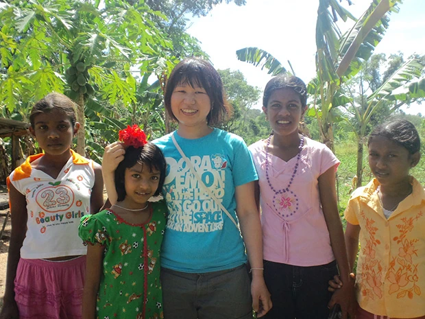
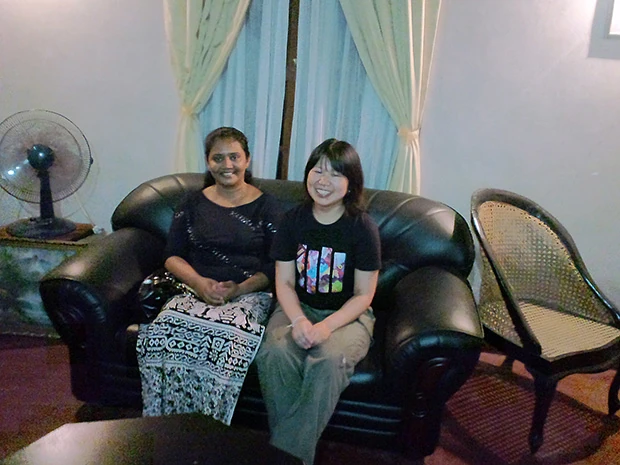
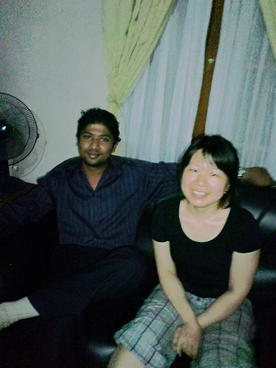

「他の英語圏の国より費用が安く、マレーシアやタイでの語学留学の情報も収集しましたが、ホームステイというのはなく、このプログラムが一番サービスが良いと思い、スリランカという国は英語も普及している、ということを知ったため、参加しました。
インターネットでこのプログラムを知り、メールでのやり取りのみでしたので、出発直前になり、不安もありました。
一度お伺いして、直接お話をしておけば良かった、と思いましたが、スリランカの空港から、マーネルさんがきちんと待っていてくれたので、すぐに安心できました。
英語レッスンは、グラマー、スピーキングと飽きないよう、また、両方伸ばせるよう配慮してくれました。
また、英語の勉強だけでもなく、先生よりスリランカについて、様々な事を教えてもらいました。
日本とスリランカの違いについて、いろいろ知ることが出来、スリランカの理解を深められました。
宿題はほとんどありませんでしたが、先生より、自分の弱点の単語の少なさを言われ、空き時間に自己学習も始めるように
なりました。
スリランカでのホームステイは、家自体、日本と異なりとまどいもありましたが、ここのホームステイの家族は、私が16人目の生徒だということで、日本人についての理解もあり、とても暖かく迎えてくれ、数日ですぐに慣れることができました。
ホストファミリーは、家族全員、私を好いてくれているのがよくわかり、とても居心地が良かったです。
スリランカでは、女性の一人外出は好まないようで、家からほとんど出られなかったのが、日本と異なり、少々息苦しい感じもしましたが、全て私のための事なので、心配してくれてありがたかったです。

ステイ先の家族や先生が、『スリランカという国では、未婚女性、まして外国人女性が一人で出歩くのは勧められない』ときちんと状況を説明してもらっていたので、出かけたいな、という気持ちはありましたが、それがダメな理由も理解できました。
ホームステイ終了後、一人で旅行をしたのですが、やはり日本人は甘くみられているな、と強く感じました（スリーウィラー乗車時にお金をかなり多くとられ、結局紙幣を渡し、少し目をそらした隙に運転手がお金を隠してしまい、余分に払わざるを得なくなりました）。
もっと自己防衛を強くしなければ、と思いました。
TFGのツアーに参加し、3日間を通して、スリランカの低開発村の人たちとの交流や話を聞くことができ、よりスリランカを理解できたかな、と感じました。
小さなこと（裁縫やココナッツからお菓子を作ったり、油をつくったり）を学んだ人たちが、その後、その仕事でかなりの収入が入るようになった、という話を聞き、発展途上という言葉を改めて感じました（日本では、今裁縫やお菓子などの製作を習ってもここまで収入が増えることはないだろうな、と感じたため）

この国は、発展途上の国ということもあり、日本より不便だろうと思っていましたが、ホームステイ先ではそのような不便さは感じませんでした。
また、TFGツアーで訪れたお宅や、ホームステイ先の家族の友人宅は、私が滞在していたお宅より、狭く、小さいお宅でしたが、どのお宅もテレビ、携帯電話はあり、おどろきました。
また、人々は本当にフレンドリーな人たちが多く、楽しく過ごせました。
これまで、ニュージーランドにワーキングホリデーで渡航したことがあるのですが、あちらではアジア人は馬鹿にされることもあったり、外国人自体めずらしくないので、現地の人たちと友達になるのは難しかったですが、今回は、観光地以外どこへ行っても外国人がめずらしいようで、みんなフレンドリーでした。
日本とスリランカの物価は実際にとても差がありますが、日本で一生懸命働き、資金をためてスリランカに行くことが出来た状態の私でも、時々、『お金持ち』と思われているようで、とまどうこともありました。
TFGツアーに参加した際、逢坂さんがこの事業を始めたきっかけを田中さんや他の方からも伺い、逢坂さんもここの職業訓練所に貢献されていたことを知り、感心しました。
逢坂さんはメールの返信をいつも迅速にくれ、たくさんの質問にも答えてくれたので、やりとりがスムーズに行えました。
現地のマーネルさんも、いつも『何かあったら連絡してね』と言ってくれて、安心してスリランカでの生活を送ることが出来ました。
ぜひまたスリランカへ行きたいと思っています。
期間、費用の関係もあり、このプログラムに参加できるかわかりませんが、可能ならまたぜひ参加したいです。
8月2日から10月22日までプログラムに参加しました。
加藤夏樹」